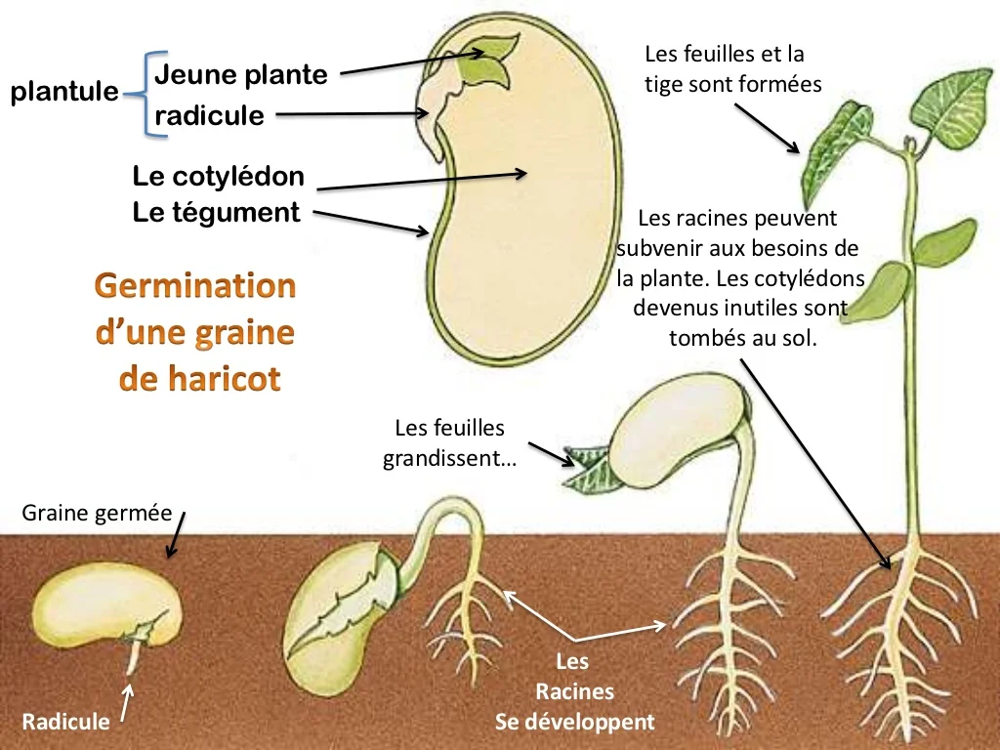
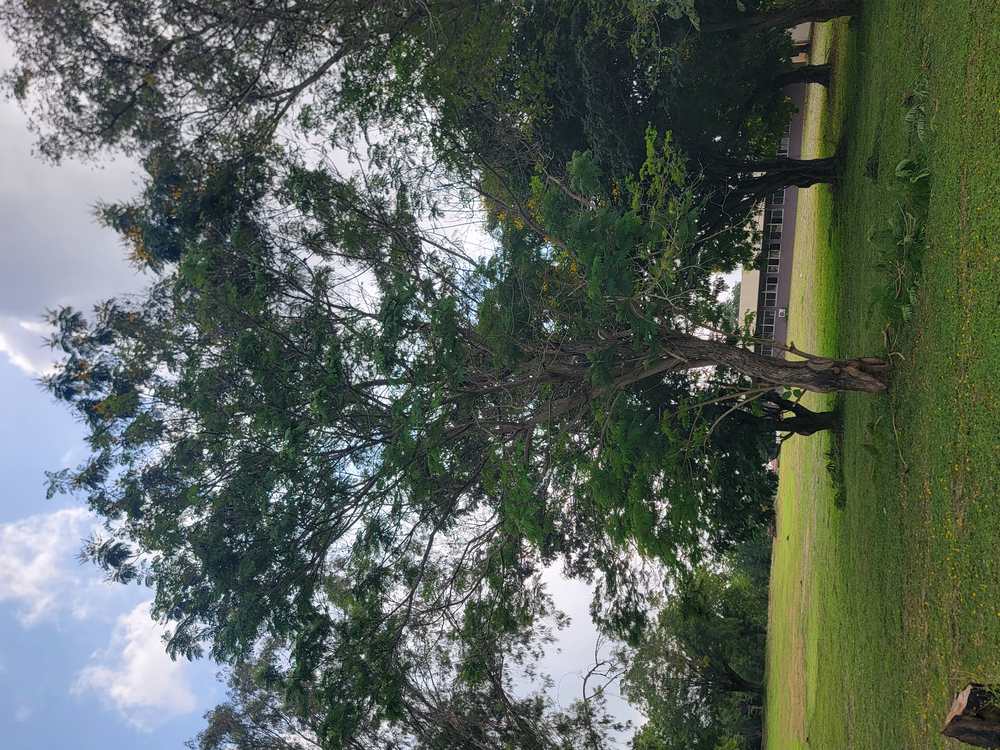

Les dicotylédones sont des plantes à fleurs avec deux feuilles embryonnaires (cotylédons) contrairement aux monocotylédones, qui n’en possèdent qu’une. L'évolution des dicotylédones au cours du temps est un processus qui a commencé il y a 140 millions d’années. Les dicotylédon es sont très présents dans la plupart des écosystèmes terrestres, avec environ 200 000 espècessur la Terre. L’évolution des dicotylédones a été marquéé par des étapes clés, telles que l’évolution des systèmes vasculaires au Silurien et l’avenement des plantes à fleurs au Crétacé.

CYCLE DE GERMINATION DES DICOTYLEDONES
Source: wikipedia.com

Un dicotylédone de l’ espèce siamea (Senna siamea)
lieu d’observation
latitude (x;y °): 6,883892
longitude (x;y °): -5,229218
précision de la mesure: 10m